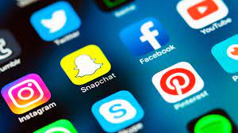

Solsiale medier, noe nesten hele verden bruker. Dette vertøyet har påvirket oss som enkeltmennesker og hele verden. Du legger sikkert ikke merke til det, men du har antakelig flere timer foran skjermen. Men hvordan har noen apper klart å endre en hel verden?
Her er et bilde av de mest brukte appene i verden.
Her er en video av historien til sosiale meider.
Sosiale medier er nettsider og apper som gjør det mulig å skape og dele innhold,samt delta i sosiale nettverk. Blant disse sosiale verktøyene er facebook, Twitter, Instagram, Snapchat og Youtube mest brukt. Både i Norge og verden. Sosiale medier har endret måten vi kommuniserer på. Dette har påvirket hverdagen og i jobbsammehneng. Verktøyet bruker også til nyhetsformidling, markedsføring, politiske ytringer og offentlig informasjon. Men den er mest brukt av privatpersoner.
Sosiale medier har vokst seg fra å være et lite fenomen til å bli en sterk utfordrer til etablerte medier. Sosiale medier har eksistert før begrepet oppsto. En forløper for sosiale meider var SMS-basert deltakelse via TV-skjermen, såkalt SMS-TV. Dette var populært på starten av 2000-tallet. De første sosiale nettverkstjenestene i Norge var VGs Nettby(2006-2009) og Dagbladets Blink(2002-2011). Majoriteten av brukerene på disse platformene gikk etterhvert over til Facebook fra 2007.
Det store spørsmålet vi nå er ute etter er, er sosiale medier skadelig eller bra for deg? Vi må se dette på to synspunkter. Hva kan sosiale medier gjøre godt for deg? Det første jeg kommer på er at det er utrolig lett å sosialisere seg og bli kjent med masse folk over hele verden. Det gjør også lettere å holde seg oppdatert i hverdagen med tanke på at du har lett tilgang til forkjellige nyhetsbrev på nettet. Det dukker også opp nyheter på Snapchat, facebook osv. Sosiale medier gjør hverdagem lettere og du "henger" lettere med i verden.
Hva er dårlig med sosiale medier? Verktøyet er garantert den største grunnen til hvorfor du har så mye skjermtid. Fristelsen til å gå inn på Instagram etter at noen har kommenter på bildet ditt, eller når det kommer en varsling av en sendt snap. Det å sjekke en varsling kan bli til å skrolle ned på appene i flere timer om dagen. Dette kan gjøre deg mindre produktiv i den "virkelige" verden. Det har også høy risiko for at du blir avehngig. En annen ting er at de som eier de sosiale mediene gjør alt de kan for at du skal bruke mest mulig tid på appene deres. For hver facebook varsling du får og du klikker på, så har eierene "vunnet" oppmerksomheten din. Et annet problem er når 6-10 åringer er på disse verktøyene. Disse aldergruppene kan bli veldig påvirket av disse mediene. Det er mye upassende innhold som du plutselig kan klikke seg inn på eller plutselig begynne å tekste med en eldre person. En måte på hvordan du kan begrense skjermtiden din er å ta av varslinger sånn at du ikke får den fristelsen av å åpne appen eller meldingen. Du kan også få begrenset skjermtid hvor du ikke er på sosiale medier.
Får å konkludere emnet, så er det mange positive og negativet med sosiale medier. På den ene siden er det en enkel måte å henge med i hverdagen og lett å få sosialisert seg. Men samtidig har en mengde alltid noe å si, hvis du alltid er så opptatt av hvor mange følgere du har, likes og bruker nesten hele dagen foran skjermen kan det bli skadelig for deg. Sosiale medier burde ha en aldersgrense på 11-12år for da føler jeg de forstår hva siom ikke er riktig og galt over nettet. Foreldrene burde også ha en sentral rolle og passe skikkelig på ka ungene gjør på disse mediene.